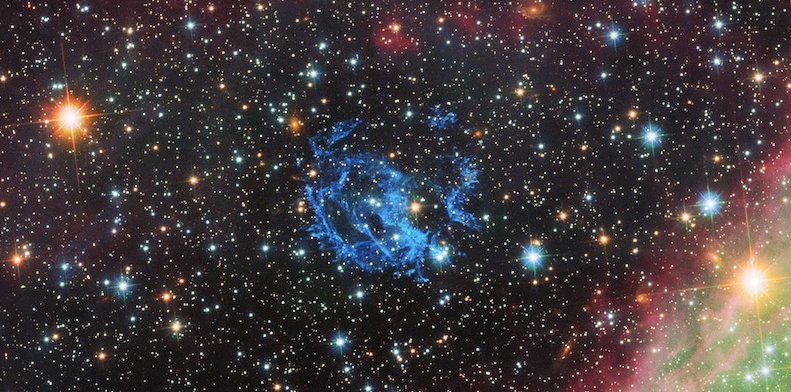

This website (and the associated Github repository) is dedicated to the Virtual Reality (VR)
application E0102-VR.
This application was developed between June and September 2018 at the Chilean headquarters
of the European Southern Observatory (ESO) in Santiago. It was designed to explore the
potential of VR for the visualization and scientific characterization of observational datasets in astrophysics.
The specific scientific goal of E0102-VR is to help characterize the complex 3D structure of
the oxygen-bright ejecta in the supernova remnant 1E 0102.2-7219, located in the Small
Magellanic Cloud. These ejecta correspond to the outer-layers of a massive star that exploded
in a core-collapse supernova ~2050 years ago. During this event, the outer-layers of the
progenitor star were expelled into space at a few 1000 km/s, giving rise to the complex
filamentary structure we see today in this system.

Fig.1: The oxygen-bright filaments of the supernova remnant 1E 0102.2-7219, seen by the
Hubble Space Telescope. Credit: NASA, ESA and the Hubble Heritage Team (STScI/AURA).
One key aspect of these ejecta is that they have been roughly moving ballistically (that is,
with a constant speed) since the supernova explosion. Hence, the radial velocity of each
ejecta knot can be translated into a physical depth. By measuring the radial
velocity of all the knots in the system with the
MUSE integral
field spectrograph at the Very Large Telescope, we could then assemble the 3D map of the
ejecta: that is, the real 3D map of the star chunks as we see them today.
Our E0102-VR application allows a complete immersion of the user inside the 3D structure.
The interactive plot below also allows to interact with the 3D structure.
Fig.2: The oxygen-bright filaments of the supernova remnant 1E 0102.2-7219, seen by
MUSE. The radial velocity of the oxygen-emitting knots can be measured for each pixel in
this image.
This interactive version of the 3D map relies on the X3DOM (pronounced "X-Freedom")
framework for its integration within HTML documents. Dedicated interaction buttons allow
to select pre-set views of the model, add clip planes, take screenshots, toggle the
reference sphere on or off, and "peel" the intensity layers of the oxygen-bright ejecta.
For each clip plane, the value \(\Delta d\) indicates in pc the distance between the
given clip plane and the model center (set as the location of the Central Compact Object,
anchored to the rest frame of the SMC for depth), visible as a purple sphere.
One sphere of 3 pc in radius is included as a scale references. The blue arrow points
towards the Earth (located 62 kpc away), the green arrow points North, and the red arrow
points West.
The central gap in the model (0.4 pc thick) corresponds to the rest-frame [OIII] spectral
range in the SMC. This area is contaminated by background oxygen emission that fills the
full spatial extent of the datacube, and which was cropped off from this 3D map for clarity
purposes.
Typical loading time (dependant on connectivity speed): 5-30s.
Screenshot:
→
Outer flux density level: 2.5 \( \times10^{-18} \text{ erg s}^{-1} \text{ cm}^{-2}\ \AA^{-1}\)
Reference spheres:
Viewpoints: